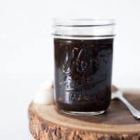

Description
This simple teriyaki sauce recipe comes together in less than 10 minutes.
It is great for stir fries, marinating, or making my teriyaki tofu! Feel
free to reduce the amount to 2 tablespoons of sugar. For slightly thicker
sauce, use cornstarch.
Ingredients
- 1/2 cup soy sauce
- 6 tablespoons mirin
- 6 tablespoons water
- 3 tablespoons sugar
- 2 cloves garlic, minced
- 2 teaspoons ginger, minced
- 1 1/2 teaspoons cornstarch
Instructions
-
Add the soy sauce, mirin, 5 tablespoons of water, sugar, garlic and
ginger to a saucepan. Use the remaining tablespoon of water to dilute
the cornstarch. Set the cornstarch slurry aside.
-
Mix the contents of the saucepan and bring it to boil. Reduce the heat
to medium and let it simmer for 2 to 3 minutes. Give the cornstarch
slurry a quick stir and pour it into the saucepan. Stir to combine. Let
the sauce cook for another 1 to 2 minutes so that the sauce thickens
slightly. Turn off the heat.
-
Let the teriyaki sauce cool to room temperature before pouring it into a
jar. The sauce will keep in the refrigerator for several weeks.